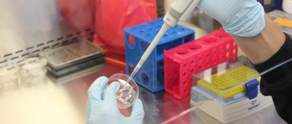

The difficult road to drug approvals

The path to obtaining high quality drugs begins with the identification of good targets, a precise targeting strategy and good follow up screens to establish validity of the hits and the therapeutic efficacy.
In vitro and in vivo models need to predict with high fidelity the effects of the candidate drugs in the patients.

The route of administration is key and the therapeutic areas can also dictate the key barriers to a successul clinical trial.